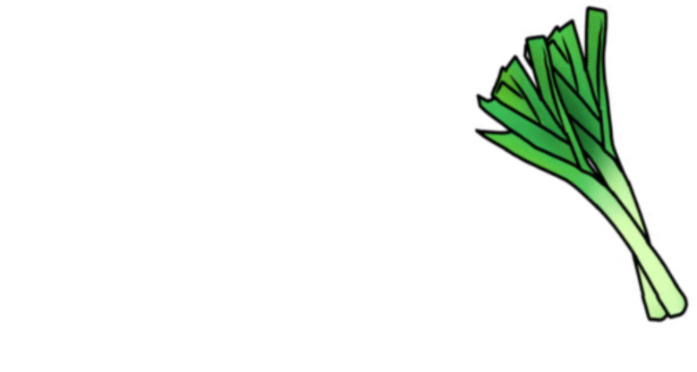

JUEGUITOS AMERIKE
En esta página web encontrarás una cuidada selección de videojuegos desarrollados por grupos independientes a lo largo de un semestre académico en la universidad Amerike Edomex. Esta plataforma nace como un espacio dedicado a visibilizar el talento emergente de los desarrolladores, destacando la pasión, dedicación y el gran esfuerzo técnico vertido en cada uno de estos proyectos.
A través de las distintas secciones, los mismos creadores nos contarán de primera mano cómo vivieron el proceso de adaptación desde las primeras ideas esbozadas en papel hasta su ejecución final en pantalla. Descubrirás la evolución de sus conceptos, los ajustes en las mecánicas de juego que debieron realizar durante la producción y los principales objetivos técnicos y creativos alcanzados por cada equipo.
Por último, encontrarás una descripción detallada sobre los distintos géneros y estilos de juego, el trasfondo de sus historias y mecánicas principales, así como guías e instrucciones claras sobre cómo jugarlos. Te invitamos a explorar el catálogo y disfrutar de las propuestas nacidas en nuestras aulas.
DESARROLLADORES Y EQUIPOS

MAKE IT AGAIN BRO! - Rockleek Studios ¡El futuro llegó demasiado pronto! En este juego de ritmo, acompañarás a El Mimao, un artista de 2026 que despierta inesperadamente en 1986. Sin dinero y en una época donde su música es completamente desconocida, tendrá que abrirse camino desde las calles hasta los escenarios más grandes. Viaja por distintas épocas y ciudades, desde Los Ángeles hasta Miami y Knebworth, supera desafíos musicales, sigue el ritmo y demuestra que tu música puede conquistar cualquier generación. ¿Podrás convertirte en el artista número uno de la época? ¡El escenario es tuyo!
JUEGOS
Nombres del juego, desarrolladores, géneros e instrucciones de cómo jugar.
FIN